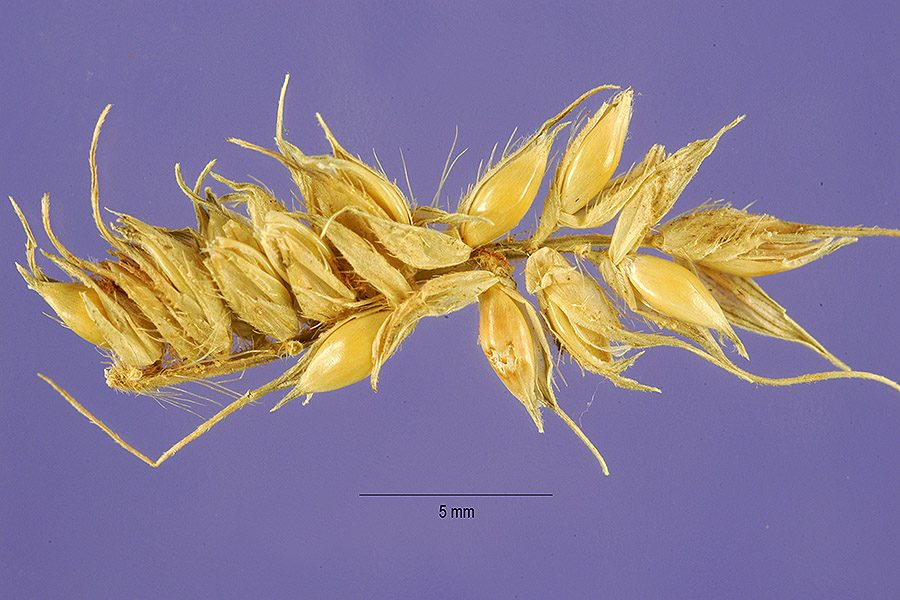

बरगू घासBurgu Grass
Echinochloa stagnina · Poaceae · FLR-0326

- Scientific name वैज्ञानिक नाम
- Echinochloa stagnina (Retz.) P.Beauv.
- Family कुल
- Poaceae
- Hindi हिंदी
- बरगू घास
- Local names स्थानीय नाम
- burgu grass, dhansam, jal sanwa, burgu
- Status here यहाँ की स्थिति
- native
- Movement आवागमन
- Resident, here all year
- Known from कहाँ दर्ज
- Others have published records from the wider Awadh–Purvanchal plain, none yet from Basti–Ayodhya अवध–पूर्वांचल से दूसरों के प्रकाशित अभिलेख, बस्ती–अयोध्या से अभी नहीं
- IUCN IUCN
- not evaluated
- Review समीक्षा
- not yet reviewed
When to look कब देखें
Present all year. साल भर मौजूद।
Uses and possibilities उपयोग और संभावनाएँ
“Traditional medicine” means a documented traditional use, not a claim that it works. Nothing on this page is medical advice.
Drawn from the documented uses in the profile below, where each is labelled traditional, current or a research lead. All uses →
Tell it apart from इनसे अलग पहचानें
बरगू घास / Burgu Grass
Echinochloa stagnina (Retz.) P.Beauv. — Poaceae
बरगू घास — उत्तर भारत के तालों, पोखरों और जलमग्न धान के खेतों में उगने वाली एक मजबूत, रसीली जलीय घास, जिसे 'जल साँवाँ' या 'धानसम' भी कहते हैं। इसके तने पानी में तैरते हुए कई मीटर लंबे हो जाते हैं और पानी के ऊपर उठने वाले हिस्से पर हरी-बैंगनी घनी बालियाँ निकलती हैं जिनमें लंबी मूँछें होती हैं। यह भैंसों के लिए अत्यंत स्वादिष्ट और पौष्टिक हरा चारा है।
Quick Identification त्वरित पहचान
| Feature | Description |
|---|---|
| Habit | Robust perennial semi-aquatic grass with culms 1–2 m high rising from long floating bases (Bor 1960) |
| Culms | Spongy, decumbent and creeping in mud, rooting at lower submerged nodes (Bor 1960) |
| Ligule | A prominent fringe of stiff yellowish hairs on lower leaves (Bor 1960) |
| Leaves | Linear, 15–45 cm long, 6–25 mm wide, with rough scabrid cutting margins (Duthie 1888) |
| Inflorescence | Dense, nodding, linear or pyramidal panicle 10–25 cm long with secund racemes (Bor 1960) |
| Awns | Long, rigid, scabrid, 5–25 mm long, projecting from fertile spikelets (Bor 1960) |
Field tip: Look in shallow waterlogged jheels and ditch borders in autumn for tall semi-aquatic grasses with trailing spongy stems and nodding awned panicles whose leaf ligule has a conspicuous fringe of stiff hairs.
हिंदी — कैसे पहचानें: पानी में तैरते मोटे स्पंज जैसे तने, पत्ती की जड़ पर कड़े बालों की कतार, और झुकी हुई घनी बालियाँ जिनमें लंबी कांटेदार मूँछें होती हैं।
Morphology शारीरिक संरचना
Biometrics (Bor 1960; Duthie 1888):
| Measurement | Range |
|---|---|
| Culm height | 1–2 m (Bor 1960) |
| Floating stem length | 1–3 m (Bor 1960) |
| Leaf blade length | 15–45 cm (Duthie 1888) |
| Leaf blade width | 6–25 mm (Bor 1960) |
| Panicle length | 10–25 cm (Bor 1960) |
| Spikelet length | 5–7 mm (Bor 1960) |
| Awn length | 5–25 mm (Bor 1960) |
Culms and habit: Culms stout, spongy, branched, ascending from long prostrate or floating rhizomatous runners that root profusely at lower joints. Internodes hollow, smooth, greenish to purplish.
Leaves: Sheaths loose, smooth, glabrous, lower ones often spongy and floating. Ligule represented by a dense transverse line of stiff cilia on lower leaves (distinguishing it from liguleless Echinochloa colona). Leaf blades flat, linear, tapering to an acuminate tip, glaucous green, margins scabrous.
Inflorescence and spikelets: Panicle erect or nodding, 10–25 cm long (Bor 1960). Racemes dense, often purplish-tinged. Spikelets 4-ranked, ovate-lanceolate, hispid with bulbous-based hairs. Lower glume half as long as spikelet; upper lemma chartaceous, terminating in a prominent scabrid awn.
हिंदी: तने मोटे, अंदर से स्पंज जैसे और पानी में तैरने वाले होते हैं। निचली पत्तियों पर बालों की स्पष्ट कतार होती है। बाली पर दाने चार कतारों में लगे होते हैं और हर दाने पर लंबी मूँछ होती है।
Behaviour & Ecology व्यवहार एवं पारिस्थितिकी
Echinochloa stagnina is a dominant aquatic macrophyte of alluvial floodplains, marshy wetlands, and sluggish river channels. It can root in submerged bottom mud while sending long leafy shoots to float across deep water.
The hollow, aerenchymatous culms allow internal air conduction down to submerged root systems in oxygen-deficient wetland substrates. Flowering occurs throughout autumn from September to December. Dense floating stands form natural floating meadows (sudds) that dissipate wave energy, stabilize mudbanks, and provide cover for diving beetles, dragonfly nymphs, and amphibians.
हिंदी: यह जलीय घास गहरे पानी में भी आसानी से तैरते हुए फैलती है। इसके तने के अंदर हवा के रास्ते होते हैं जो पानी में डूबी जड़ों तक ऑक्सीजन पहुँचाते हैं। इसके तैरते झुरमुट छोटी मछलियों के लिए सुरक्षित शरणगाह बनते हैं।
Life Cycle / Phenology जीवन चक्र एवं ऋतुचक्र
| Period | Phenological Event |
|---|---|
| April–June | Survives dry spells in permanent waterholes or as dormant stolons in wetland mud |
| July–August | Monsoon floods trigger rapid elongation of floating stems across inundated basins |
| September–November | Panicles emerge and flower; purple-tinged awned spikelets mature |
| December–March | Seeds shed into bottom sediments; vegetative mats continue to provide winter green forage |
Propagation occurs both by shattering awned seeds that drift on floodwaters and by detached rooting stem segments.
हिंदी: बरसात के पानी में इसके तने बहुत तेजी से बढ़ते हैं। क्वार-कार्तिक में बालियाँ निकलती हैं और जाड़े के मौसम में बीज झड़कर पानी की तलहटी में बैठ जाते हैं।
Associated Species / Interactions संबद्ध प्रजातियाँ एवं पारस्परिक क्रियाएं
- Herbivores: Domestic water buffaloes and cattle graze the succulent aquatic culms with high relish.
- Waterbirds: Teals, pintails, and purple swamphens forage for ripening grains in late autumn.
- Wetland Associates: Grows alongside Asian Watergrass, Paddy, and Jungle Rice.
हिंदी: भैंसें पानी में उतरकर इसे बड़े चाव से खाती हैं और जाड़ों में आने वाली प्रवासी बत्तखें इसके दाने चुगती हैं।
Pests and Diseases कीट एवं रोग
- Stem borer larvae (Scirpophaga species) occasionally bore into floating stems.
- Brown spot caused by Bipolaris oryzae infects older leaves during humid post-monsoon weather.
- False smut fungi occasionally transform scattered spikelets into greenish-yellow spore balls.
हिंदी: तनों में कभी-कभी जलीय छेदक कीड़े लग जाते हैं और पत्तियों पर भूरे धब्बे पड़ जाते हैं।
Agricultural / Human Relevance कृषि एवं मानवीय उपयोगिता
Pastoral and Traditional Food Uses:
- Prime aquatic fodder. Known across the Gangetic plain as one of the richest natural green fodders for milch cattle, greatly increasing milk yields when fed to dairy buffaloes.
- Traditional grain. The grains were historically gathered from wild stands during famines or fast days, parched, and eaten like rice or made into sweet confections.
- Fish sanctuary. Fishermen protect burgu patches in oxbow lakes to attract spawning carps and catfishes.
- Traditional medicine. Plant decoctions have documented uses in folk lore for cooling diuretic washes and soothing digestive irritations. This is a record of traditional use, not medical advice.
Today. It is managed in traditional wetland agroecosystems as an invaluable seasonal fodder resource that requires zero chemical inputs.
हिंदी: बरगू घास को दुधारू पशुओं, विशेषकर भैंसों के लिए अमृत समान चारा माना जाता है जिससे दूध की मात्रा बढ़ती है। अकाल के समय ग्रामीण इसके बीजों को बटोर कर फलाहार के रूप में खाते थे।
Expected Locally स्थानीय संभावना एवं उपस्थिति
Not a field record. Written from published accounts for eastern Uttar Pradesh. No confirmed local sighting yet — if you have seen it, that is what the atlas needs.
अभी तक स्थानीय पुष्टि नहीं। यह विवरण प्रकाशित स्रोतों से है, किसी अवलोकन से नहीं।
Expected in eastern Uttar Pradesh across perennial jheels, oxbow lagoons of the Ghaghara and Kuwana floodplains, marshy drainage cuts, and submerged edges of low-lying paddy tracts across Basti and Ayodhya. GBIF holds published records from the wider Awadh–Purvanchal plain, none yet from Basti–Ayodhya. A first local record would be a dated photograph of the spikelets, inflorescence, or foliage, submitted with locality details through the project's About page.
Distribution भौगोलिक वितरण
Global range: Native across tropical and subtropical Africa and Asia, from India and Sri Lanka through Southeast Asia to southern China.
In India: Abundant in aquatic and marshy habitats across Assam, West Bengal, Bihar, Uttar Pradesh, Odisha, and central and southern flood basins (Bor 1960).
In Uttar Pradesh: Widely recorded from wetlands, jheels, and river backwaters of the Gangetic plain (Duthie 1888).
In Basti district / eastern UP: Expected in permanent tals, drainage swamps, and seasonally flooded lowland fields.
हिंदी: यह पूरे भारत और अफ्रीका के दलदली क्षेत्रों, झीलों और नदियों के कछारों में प्राकृतिक रूप से उगती है।
Research Questions शोध प्रश्न
- How much green fodder is harvested daily by local dairy farmers from wetland stands of burgu grass in Basti? / बस्ती में दलदली क्षेत्रों से दुग्ध उत्पादक किसान प्रतिदिन कितना बरगू चारा इकट्ठा करते हैं?
- Which migratory duck species rely most heavily on Echinochloa stagnina seeds in local sanctuaries? / स्थानीय पक्षी विहारों में सर्दियों में आने वाली कौन-सी प्रवासी बत्तखें इसके बीजों पर सबसे अधिक निर्भर रहती हैं?
- What is the nutritional feeding quality of floating burgu stems compared to cultivated green fodder crops? — Sample and compare seasonal fodder values across wet months.
- How does the presence of ligular hairs reliably distinguish vegetative plants from paddy weeds? — Test field identification traits among local agricultural workers.
- Does the dense aquatic mat harbor predatory aquatic bugs that consume mosquito larvae? / क्या इसके तैरते हुए झुरमुटों में ऐसे जलीय कीट रहते हैं जो मच्छरों के लार्वा को खाते हैं?
Similar Species समान प्रजातियाँ
| Species | How to tell apart | हिंदी | |
|---|---|---|---|
| Jungle Rice (Echinochloa colona) | Smaller terrestrial grass; ligule completely absent; spikelets unawned | साँवाँ, पत्ती पर कोई बाल नहीं, बिना मूँछ की बाली | |
| [[barnyard_grass\ | Barnyard Grass]] (Echinochloa crus-galli) | Terrestrial or semi-aquatic; ligule absent; awns variable, often shorter | बर्नयार्ड घास, पत्ती पर लिग्यूल नहीं होता |
| Asian Watergrass (Hygroryza aristata) | Floating grass with swollen spongy leaf sheaths; leaves short ovate | पत्तियाँ छोटी, फूले हुए स्पंज जैसे डंठल |
Field rule: Robust semi-aquatic grass rising from long floating spongy culms, with a distinct fringe of stiff hairs representing the ligule and dense nodding awned panicles, identifies Echinochloa stagnina.
Taxonomy & Classification वर्गिकी एवं वर्गीकरण
Original description. First described as Panicum stagninum by Anders Jahan Retzius in 1786 in Observationes Botanicae, vol. 4, p. 17. Transferred to Echinochloa by Ambroise Marie François Joseph Palisot de Beauvois in 1812 in Essai d'une Nouvelle Agrostographie, pp. 53, 161.
Subspecies. Monotypic — recognized as Echinochloa stagnina without formal infraspecific taxa in modern Asian floras.
Family and order placement. Belongs to the grass family Poaceae, subfamily Panicoideae, tribe Paniceae, in the order Poales.
Phylogenetic notes. Echinochloa comprises about thirty-five species of annual and perennial grasses adapted to wetland and open disturbed habitats, characterized by hispid spikelets.
IUCN status rationale. Not evaluated in the master expansion list; it is a widespread, abundant, and ecologically vigorous aquatic macrophyte across the Old World tropics.
हिंदी: इसका पहला वैज्ञानिक वर्णन रेट्ज़ियस ने 1789 में किया था और 1812 में पैलिसोट डी ब्यूवोइस ने इसे एकिनोक्लोआ वंश में रखा।
Photo Gallery छायाचित्र दीर्घा
No photos yet — add field photos to media/species/burgu_grass/ and run node scripts/sync_photos.js.
Photos needed आवश्यक फोटो
- [ ] Clump of floating grass in a marsh or pond edge (दलदल या तालाब में तैरता हुआ घास का झुरमुट)
- [ ] Detail of ligule showing the fringe of stiff hairs (पत्ती के जोड़ पर कड़े बालों की कतार)
- [ ] Nodding purple-tinged awned panicle in autumn (शरद ऋतु में झुकी हुई मूँछदार बाली)
References संदर्भ सूची
- Palisot de Beauvois, A.M.F.J. (1812). Essai d'une Nouvelle Agrostographie, pp. 53, 161. Paris: Fain.
- Retzius, A.J. (1786). Observationes Botanicae, vol. 4, p. 17. Lipsiae: Siegfried Lebrecht Crusium.
- Bor, N.L. (1960). The Grasses of Burma, Ceylon, India and Pakistan (Excluding Bambuseae), pp. 311–312. Pergamon Press, Oxford.
- Duthie, J.F. (1888). The Fodder Grasses of Northern India, p. 9. Thomason Civil Engineering College Press, Roorkee.
- Hooker, J.D. (1896). The Flora of British India, vol. 7, p. 32. L. Reeve & Co., London.
- GBIF Occurrence Data — Echinochloa stagnina (Retz.) P.Beauv., India (2025).
Source file: species/flora/grasses/burgu_grass.md